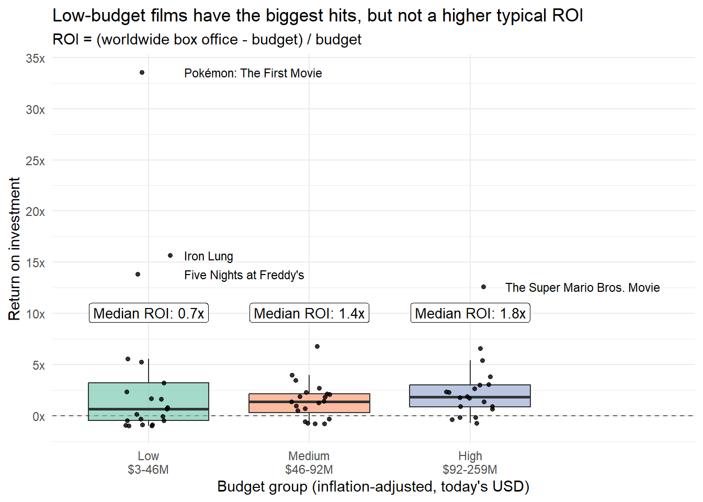
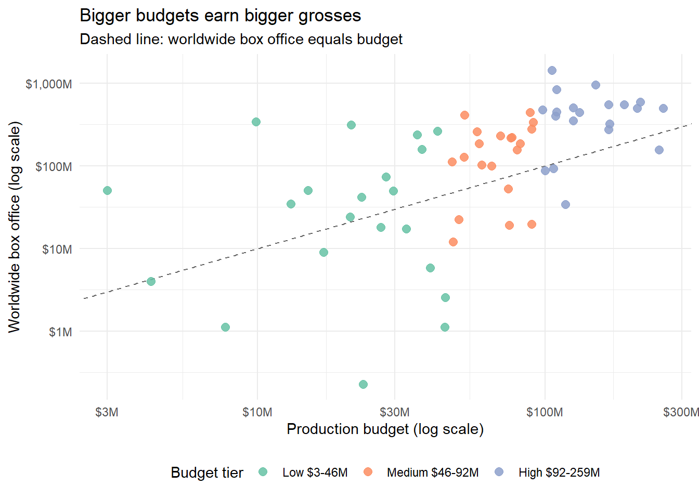
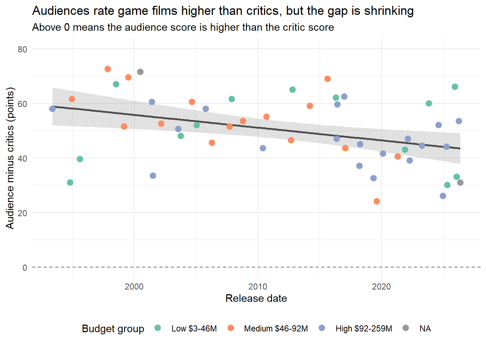
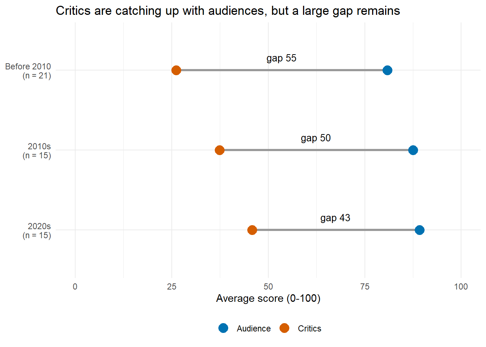

Video Game Adaptations
Analyzing the financial performance and critic response to popular films based on video games
Introduction
This project uses the “Films Based on Video Games” dataset, compiled from a Wikipedia list and published on TidyTuesday on 2026-06-09. It has ‘r nrow(game_films_raw)’ films and ’r ncol(game_films_raw)’columns, and each row is one film(theatrical,direct-to-video, television,short or documentary).Many budget,box office and score values are missing,so we focus mostly on theatrical releases.Our team chose it because video game adaptations are popular and often criticized,and we wanted to see whether they make money and how critics and audiences react.
We answer two questions.Question 1 asks whether films with bigger budgets earn a better return on investment (ROI),using budget_low’ and ‘budget_high’(the lowest and highest estimated budget)and ‘worldwide_box_office’(total worldwide earnings).The currency columns ‘budget_currency’ and ‘worldwide_box_office_currency’ give the currency symbol of each amount, and we match budget to box office using ‘title’,‘director’ and ‘release_date’(the day the film came out).Question 2 asks whether critics and audiences agree and whether the gap changes over time,using ‘rotten_tomatoes’(percent of positive critic reviews), ‘metacritic’(critic score out of 100),‘cinema_score’(audience letter grade from A+ to F) and ‘release_date’.
Question 1: Do Bigger Budgets Earn a Better Return?
Introduction
Do films based on video games earn a better return on investment (ROI) when they have bigger budgets, or do low and medium budget films do better? We define ROI as (worldwide box office - budget) / budget, so an ROI of 1 means the film earned a profit equal to its whole budget, and a negative ROI means it lost money. To answer this we use budget_low and budget_high, worldwide_box_office, the two currency columns, release_date, and an OECD consumer price index (CPI) table that puts all money in today’s USD.
We are interested in this because box office totals make expensive films look best by default, while ROI shows how much a film earned compared to what was risked. This matters for anyone deciding how much to spend on a new game adaptation.
Approach
We split the films into three budget groups(low, medium and high) using thirds of the budget, so each group has about the same number of films and we do not have to choose arbitrary dollar cutoffs. We chose a ‘boxplot’ of ROI by group,with the boxes colored by group, because it shows the median and the spread of each group,and a few huge hits do not distort it the way they would distort an average.Each film is also drawn as a dot,so the sample size stays visible.
We split the films into three budget groups (low, medium and high) using thirds of the budget, so each group has about the same number of films and we do not have to choose arbitrary dollar cutoffs. Our first plot is a boxplot of ROI by group, with the boxes colored by group, because it shows the median and the spread of each group, and a few huge hits do not distort it the way they would distort an average (Healy 2018, Ch. 4). Each film is also drawn as a dot so the sample size stays visible, and a label prints the median ROI of each group so the groups can be compared directly.
Our second plot is a scatterplot of each film’s budget against its worldwide box office, both on log scales and colored by budget group. A scatterplot is the right choice because it uses every film’s exact budget instead of cutting budget into groups, so we can check that the boxplot result does not depend on where the group boundaries fall (Healy 2018, Ch. 3). The log scales keep a $3 million film and a $250 million film readable on the same axes. A dashed line marks where box office equals budget, so a film above the line earned more than it cost and its distance from the line reflects its ROI. The two plots are of different types, and both use color to show the budget groups.
Analysis

Discussion
The median ROI rises with budget: 0.68 for low (21 films), 1.40 for medium (20) and 1.85 for high (20), so bigger-budget films did not earn worse returns, which is the opposite of what we expected. The low group is the least predictable. 43% of its films lost money, yet it also has the biggest hit, with an ROI of 33.5, because a cheap film needs only a small box office for a large ROI. The boxes overlap a lot, so the differences between groups are small.
Figure 2 shows the same pattern in absolute terms: box office tends to rise with budget, but the points scatter widely around the dashed break-even line, and 18 of the 61 films ended below it. The three biggest hits, Pokémon: The First Movie, Iron Lung and Five Nights at Freddy’s, all have low budgets, and we think this is because each already had a large following (two major game franchises and a well-known YouTuber). A cheap film cannot create that audience, so low-budget ROI looks more like a lottery that a few franchise films win. High-budget films mostly sit within a few times their budget, so their returns are steadier than those of low-budget films.
A few extreme hits stretch the y-axis of Figure 1, which makes the boxes harder to compare, so we label them by name. The results cover only 61 theatrical films, and we did not look at genre. Budgets are estimates that do not include marketing, and box office is gross ticket sales, not profit, so an ROI near zero likely means a loss. Our conclusions are descriptive and do not show that budget causes returns.
Question 2: Do Critics and Audiences Agree on Video Game Films?
Introduction
Do critics and audiences agree about films based on video games, and has the distance between them changed over time? Critics are represented by rotten_tomatoes (the Rotten Tomatoes critic score, the percent of positive reviews) and metacritic (a weighted average of critic scores out of 100). Audiences are represented by cinema_score, the letter grade (A+ to F) given by audiences polled on opening weekend, and we use release_date to place each film in time. The dataset has no Rotten Tomatoes audience score, so CinemaScore is our only audience measure, and it has to be converted from letters to points before it can be compared with the critic scores.
We are interested in this because video game films often seem to be like by fans and disliked by reviewers, and a studio would want to know whether that pattern is real and whether it is fading. We define the gap as the audience score minus the critic score, where the critic score is the average of the Rotten Tomatoes and Metacritic scores. A positive gap means audiences rated the film higher than critics did. Only some theatrical films have all three ratings, so this analysis covers a small, better-known subset of releases.
Approach
Our first plot is a scatterplot of the gap against release date with a fitted linear trend line. A scatterplot shows every film as a point, so we can see the spread of the gap and spot unusual films, and the trend line summarizes whether the gap is rising, falling or flat (Healy 2018, Ch. 3). The points are colored by the budget group from Question 1 to check whether expensive or cheap films behave differently. We did not use yearly averages because there are too few films per year for them to be reliable.
Our second plot compares critics and audiences by era (before 2010, the 2010s and the 2020s). For each era it shows the average critic score and the average audience score as two colored dots joined by a line, so the length of the line is the gap. This dumbbell plot is the clearest way to show how far apart two scores are, and it also shows whether the gap shrinks because one group moves or both do. The eras are only a way to get groups of 15 to 21 films, so the cutoffs are our choice. The two plots are of different types, and both use color.
Analysis
The first block converts CinemaScore grades to points (about three points per grade step, from A+ = 100 down to F- = 54) and computes the gap. Missing and “N/A” grades stay missing, so only films with all three ratings and a release date are kept. It also adds the budget group from Question 1, creates the eras, and computes the numbers used in the discussion.
Figure 3 shows the gap for each film over time, colored by budget group, with a linear trend line.

Figure 4 shows the average critic and audience scores in each era. The line between the dots is the gap.

Discussion
All 51 films have a positive gap: audiences rated every film higher than critics did, by 50 points on average (range 24 to 72). The trend line in Figure 3 slopes downward by about 0.5 points per year (p = 0.005; Spearman’s rho = -0.41), so the gap has narrowed over time even though it is still large for recent films. The scatter around the line is wide, and no budget group stands out, so the trend describes the typical film and not any single one.
Figure 4 shows why the gap narrows. The average critic score rises from 26 before 2010 to 37 in the 2010s and 46 in the 2020s, while the average audience score only moves from 81 to 89, so the gap falls from 55 to 43 points. We think critics became kinder to recent adaptations, while audiences were already giving high grades to films that critics disliked, such as Mortal Kombat Annihilation and the early Pokémon films. A likely reason is that CinemaScore polls opening-weekend audiences, who are self-selected fans that came to see characters they already like.
Two limitations matter. First, the gap partly reflects the measurement scales: CinemaScore grades cluster near the top and may be inflated by fans, while Rotten Tomatoes is the percent of positive reviews, so a positive gap is expected even if both groups felt the same way. The conversion of letter grades to points is also a judgment call, so the size of the gap is best read as a comparison across films and eras. Second, only 51 films have all three ratings, CinemaScore mainly covers wide U.S. releases, and the era groups are small, so the trend may not hold for the rest of the data.